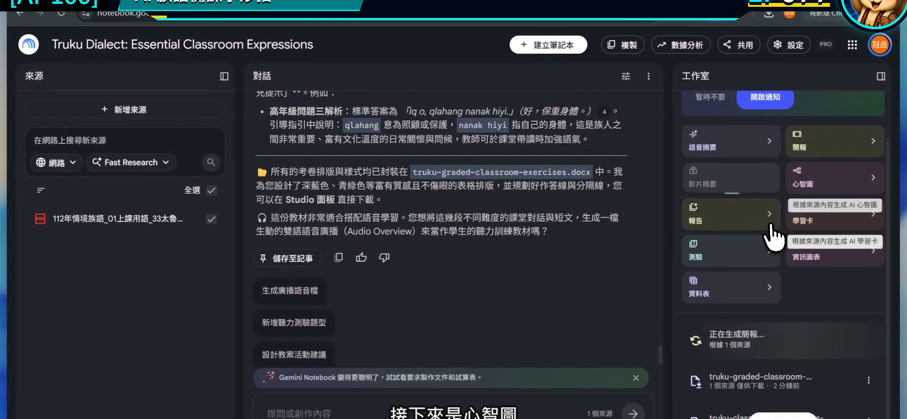
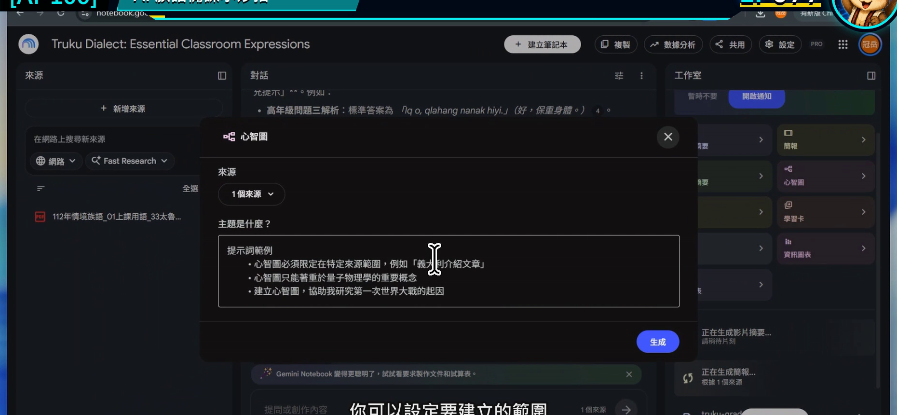
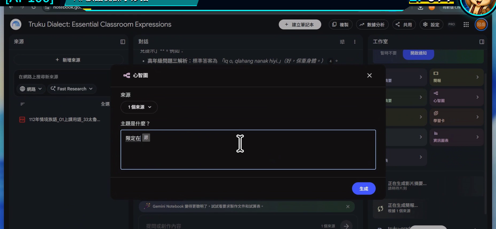
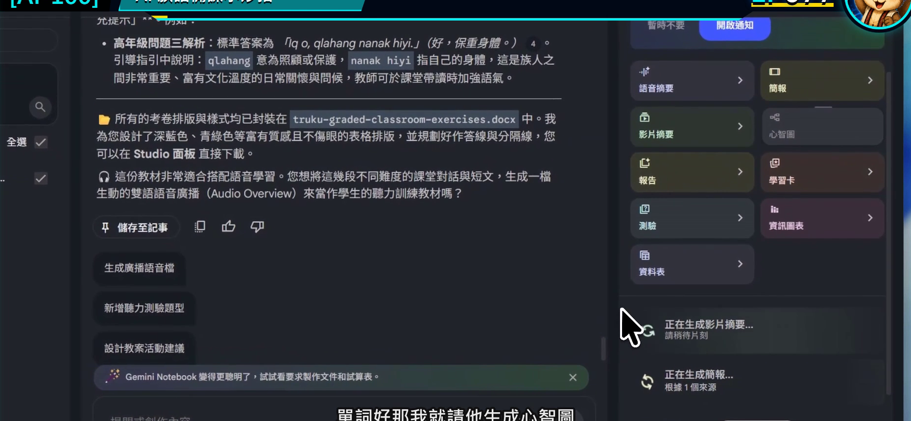
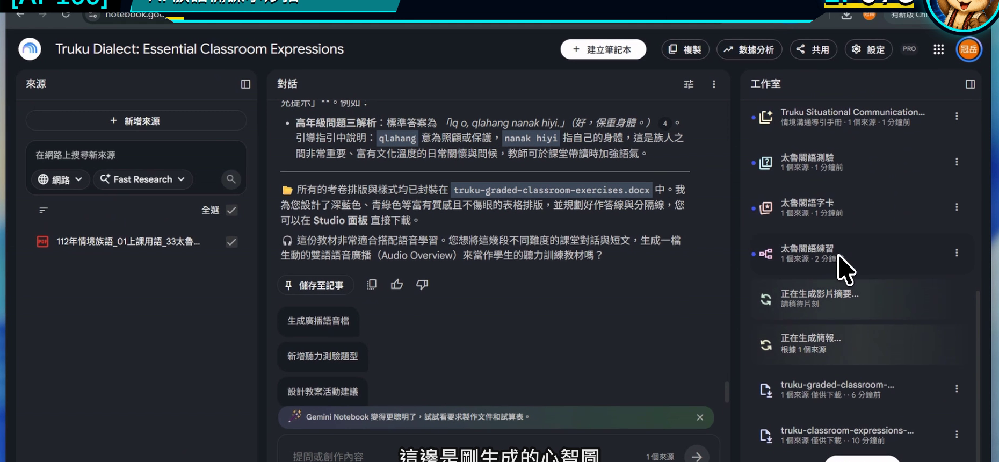

EP077｜用心智圖整理教材與課程架構
今天只做一件事
把分散在多份教材裡的內容，整理成一張看得懂「先教什麼、後教什麼」的課程心智圖。
完成後，你會有：
一張課程架構圖，以及一條可以直接拿來排課的教學順序。
心智圖不是漂亮裝飾
一張對備課有用的心智圖，應該幫老師回答：
- 這個單元有哪些主要概念？
- 哪些內容需要先學？
- 哪些可以變成活動或評量？
- 哪個分支資料不足，需要再補？
如果心智圖只是把所有名詞堆在一起，看起來很多，卻沒有教學順序，就還不能拿來排課。
今天的示範
以「日常問候」單元為中心，整理成五個分支：
- 使用情境。
- 教材中的正式詞句。
- 聽與說的練習。
- 課堂活動。
- 複習與觀察。
這五個分支只是課程骨架，真正的族語內容仍從目前來源中擷取。
開始前先準備
- 選好與同一單元有關的來源。
- 暫時取消其他主題。
- 寫下心智圖要解決的問題。
今天的問題是：
如果要把這些資料排成三堂課，學生應該依序接觸哪些內容？
STEP 1｜先把來源範圍縮到同一個單元
在左側只勾選和「日常問候」直接相關的教材。
畫面要看到
筆記本已經有整理結果，右側工作室可以建立新成果。

老師要做
如果來源裡同時有整學期課程，先用勾選縮小範圍。來源越集中，心智圖越容易看出結構。
完成後確認
目前勾選的每一份資料，都能說明它和這個單元的關係。
STEP 2｜開啟心智圖設定
到右側工作室選擇「心智圖」。
畫面要看到
心智圖建立或自訂視窗已開啟。

老師要做
先找是否有自訂範圍或焦點的欄位。不要立刻生成整本筆記本的所有概念。
完成後確認
你已在心智圖設定中，而不是一般對話輸入框。
STEP 3｜用「教學順序」限制心智圖
可直接複製的心智圖焦點
請只根據目前勾選的來源，建立「日常問候」課程心智圖。
中心主題為日常問候，第一層分成：使用情境、正式教材內容、聽說練習、課堂活動、複習與觀察。
每個分支最多保留三個重點，並標示它比較適合放在第 1、2 或 3 堂課。
來源沒有提供的內容標示【待補資料】，不要新增族語詞句或自行解釋文化意義。
畫面要看到
焦點欄位中已經寫入中心主題、第一層分支與三堂課限制。

老師要做
如果只想整理一堂課，把「三堂課」改成「40 分鐘課程的開始、練習、收尾」。
完成後確認
你能在生成前預測心智圖第一層會出現哪些分支。
STEP 4｜生成後先看第一層
確認設定並開始生成。
畫面要看到
設定完成，可以送出建立心智圖。

老師要做
結果出現時，先不要一口氣把所有分支展開。先看中心主題與第一層是否符合課程目的。
完成後確認
第一層沒有跑出無關單元，也沒有把工具功能誤當成教學內容。
STEP 5｜展開分支，排出三堂課
點開與課程順序有關的分支，逐層查看細節。
畫面要看到
心智圖以中心主題向外展開，分支可以繼續點開查看。

老師要做
把結果轉成下面的排課表：
| 課次 | 核心任務 | 使用哪個心智圖分支 | 還缺什麼 |
|---|---|---|---|
| 第 1 堂 | 認識情境 | ____________________ | ____________________ |
| 第 2 堂 | 聽說練習 | ____________________ | ____________________ |
| 第 3 堂 | 實際使用與複習 | ____________________ | ____________________ |
完成後確認
每一堂課都有一個清楚任務，不是平均把所有內容切成三份。
心智圖太大時，怎麼縮？
分支太多
改成：
第一層只保留五個分支，每個分支最多三個子項目。
出現很多相似詞
改成：
合併意思重複的節點，保留來源用語，並列出合併依據。
看不出教學先後
改成：
在每個主要分支前標示建議課次，並說明先後關係。
心智圖把推測當成教材內容
縮小來源後重新建立，並要求來源沒有的節點全部標示【待補資料】。
放回族語課程規劃
心智圖最適合在這三個時刻使用：
- 新單元開始前：看資料是不是少了一塊。
- 排課時：決定先備哪一堂。
- 學期結束後：回看哪些分支教過、哪些要補強。
它是老師的規劃圖，不一定要直接投影給學生。學生需要的是從圖中整理好的清楚任務。
完成前最後檢查
□ 心智圖只使用同一個單元的來源。
□ 中心主題和第一層分支符合教學目的。
□ 分支數量不會多到無法閱讀。
□ 我已把心智圖轉成實際課次。
□ 資料不足處有明確標示。
□ 族語詞句與文化說明仍回到來源確認。
今天記住一句話就好
好的心智圖不是把資料變多，而是讓下一堂課的順序變清楚。
官方參考
下一篇｜EP078 製作學習卡、測驗與互動教材